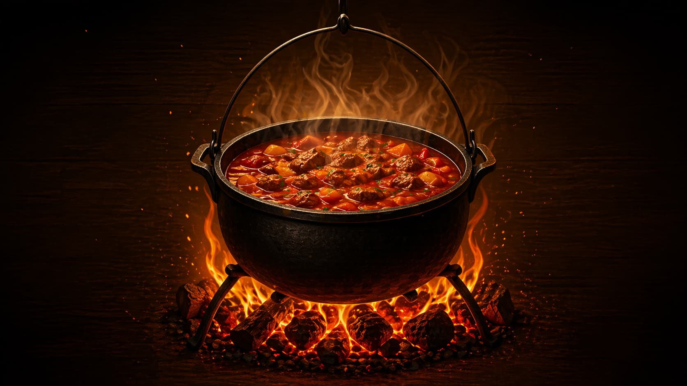
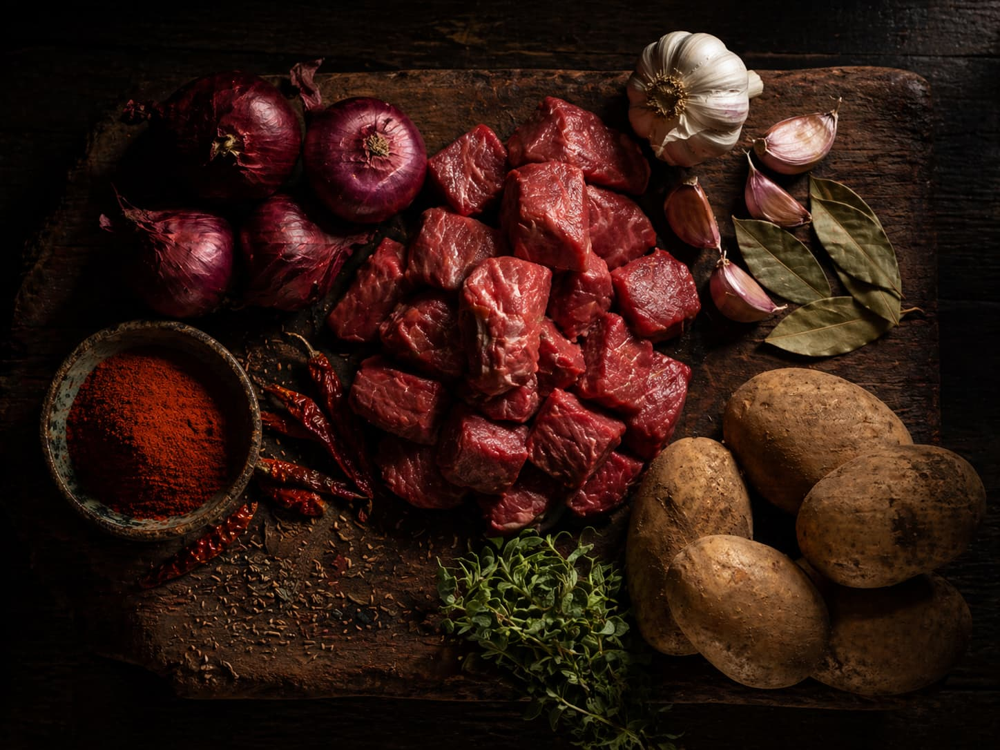
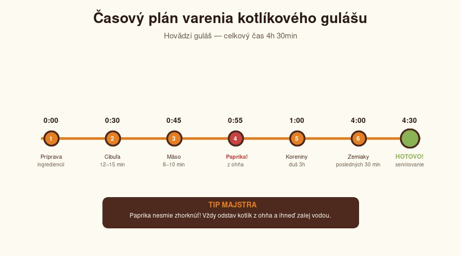
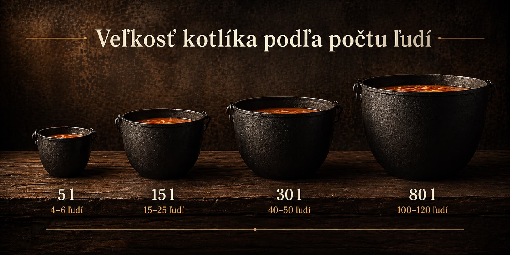

Vášeň pre varenie, úcta k tradícii




🔥 Chýba poctivé náradie?
Kvalitný kotlík je základ legendárnej akcie
Vybrať poctivý kotlík Potrebujem aj kotlinu Kompletné súpravy (ušetríte) Plynové horáky pod kotlíky* Affiliate odkaz — ak nakúpite cez partnera, podporíte nás. Cena pre vás zostáva rovnaká.
Zadáš počet ľudí, vyberieš jeden z 11 receptov, veľkosť porcie a materiál kotlíka. Kalkulačka okamžite vypočíta presné množstvo mäsa, cibule, zemiakov a korenín, odhadne cenu v eurách, navrhne časový plán varenia a odporučí správnu veľkosť kotlíka. Všetko zadarmo, bez registrácie, funguje aj offline po prvom načítaní.
Pri kotlíkovom varení pre 20-100 ľudí si chybu o 20% nemôžeš dovoliť — buď zostaneš bez obeda, alebo ti zostane 10 kg gulášu, ktorý nikto nezje. Naša kalkulačka počíta s reálnymi pomermi overenými na desiatkach akcií, rátame s 15% výparom pri dlhom varení a rezervou v kotlíku (1,3× objem jedla).
Na hovädzí kotlíkový guláš pre 20 ľudí potrebuješ cca 5 kg hovädzej glejovky alebo pleca. Plus 5 kg cibule (pomer 1:1), 4 kg zemiakov a 160 g mletej papriky.
Pre 30 ľudí odporúčame 20-25 litrový kotlík. Kotlík musí byť minimálne 1,3× väčší ako objem jedla, aby mal guláš priestor na var a neprekypoval.
Hovädzí guláš potrebuje 3,5-4 hodiny. Bravčový 2-2,5 hodiny. Divina 4-5 hodín. Polievky (česnečka, bramboračka) 45-60 minút. Dlhé varenie je tajomstvo chuti — čím dlhšie, tým lepšie (do rozumnej miery).
Zemiaky pridávaj až posledných 25-30 minút varenia, inak sa rozvaria. Ak je guláš riedky, pár kociek zemiakov rozmixuj naspäť — zahustí ho prirodzene bez potreby múky.
Paprika zhorkne, ak ju pridáš na príliš horúci tuk. Vždy stiahni kotlík z ohňa, pridaj papriku a IHNEĎ zalej vodou alebo vývarom. Paprika sa nesmie "dusiť" v tuku viac ako 5 sekúnd.
Liatina je kráľ — drží teplo najdlhšie, guláš sa v nej neprekypí, ale je ťažká (15-kg kotlík váži cca 8 kg prázdny). Smalt je univerzálny a lacný, ale krehký. Nerez sa rýchlo zahreje, ale má tenké dno a husté guláše v ňom prihárajú. Meď je profi voľba na halászlé, ale drahá a náročná na údržbu.
Rátaj s cca 0,4 kg tvrdého dreva (buk, dub) na 1 liter jedla pri 3-4 hodinovom varení. Pre 20-litrový kotlík potrebuješ 8-10 kg dreva + rezerva. Mäkké drevo (smrek, borovica) horí rýchlo a dáva málo uhlíkov — nepoužívaj ho.
Kedy sa horák oplatí: keď nemáš priestor na otvorený oheň (balkón, terasa, dvor bez ohniska), chceš rýchly štart (kotlík je horúci za 2 minúty namiesto 20 minút s drevom) alebo potrebuješ presnú kontrolu teploty pri hustých gulášoch.
Aký horák vybrať podľa veľkosti kotlíka:
• Kotlík do 20 L → Plynový horák HU 5,5 kW — kompaktný, ekonomický
• Kotlík 20–100 L → Liatinový horák 7,5 kW HU (univerzál) alebo silnejší trojprstencový Ghisa 8,8 kW 3P (rýchlejšie rozpálenie a dobre zvláda vietor)
V balení dostaneš všetko: tlakovú hadicu na propán-bután (1,5 m), regulátor tlaku 30 mbar a 2 hadicové spony — nič nemusíš dokupovať. Tip profíka: horák na rozpálenie, drevo na dotiahnutie = chuť dymu + pohodlie.
Hovädzí guláš zostáva neporaziteľnou klasikou slovenských dvorov a chalúp. Bravčový guláš je ekonomická voľba pre veľké skupiny. Kapustnica v kotlíku zažíva comeback — kombinácia dymu a kyslej kapusty je nenahraditeľná. Fazuľovica s údeným kolenom patrí k najsýtejším jedlám, aké kotlík dokáže vyprodukovať. Na Vianoce a Silvestra dominuje česnečka — vyprošťovací šampión. Česká bramboračka a maďarské halászlé rozširujú repertoár o regionálne poklady.